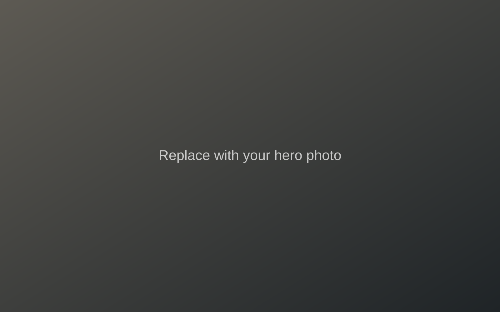
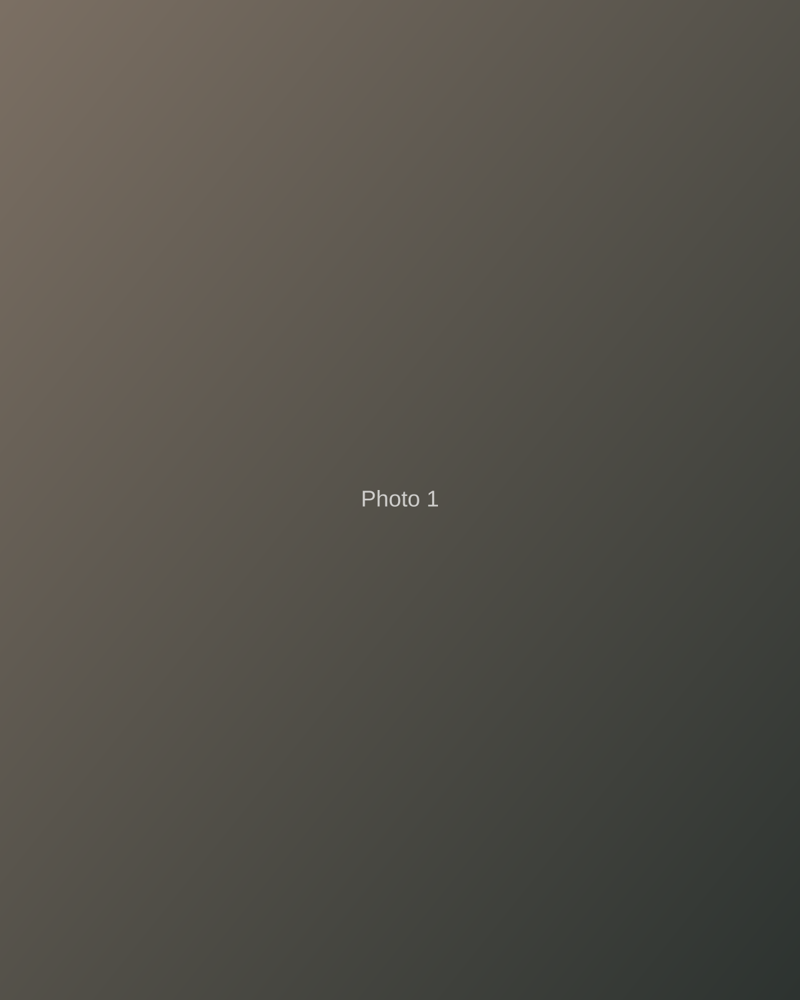
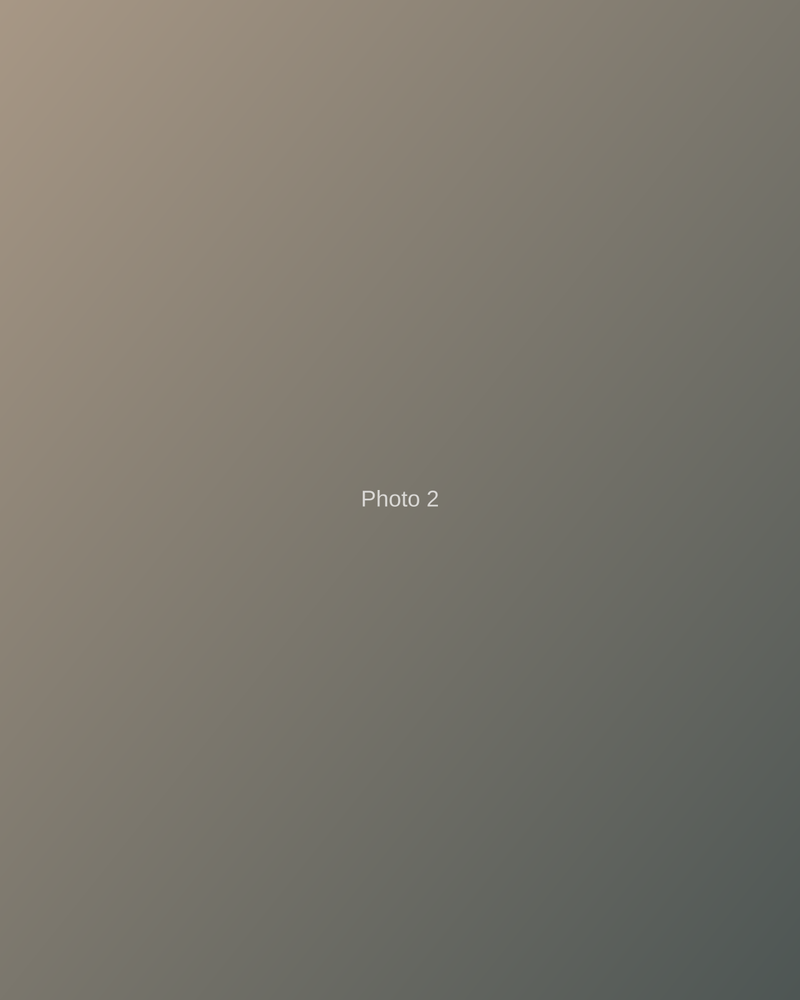
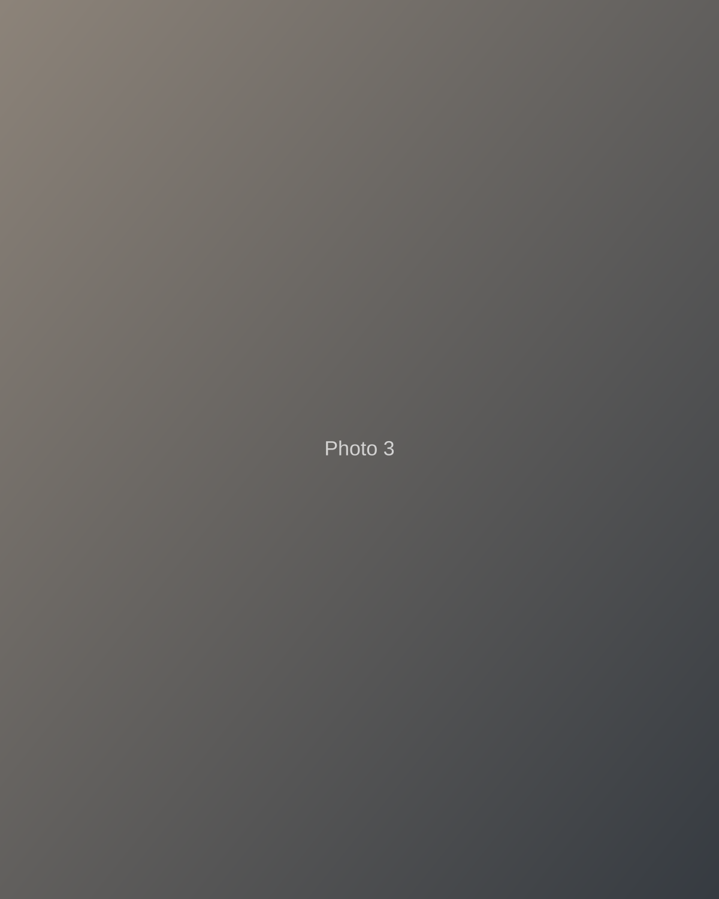
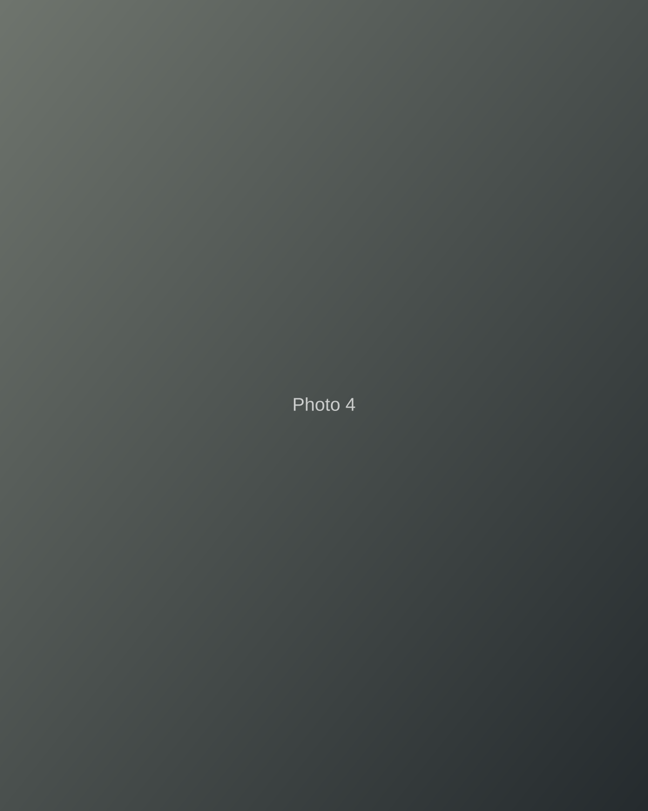
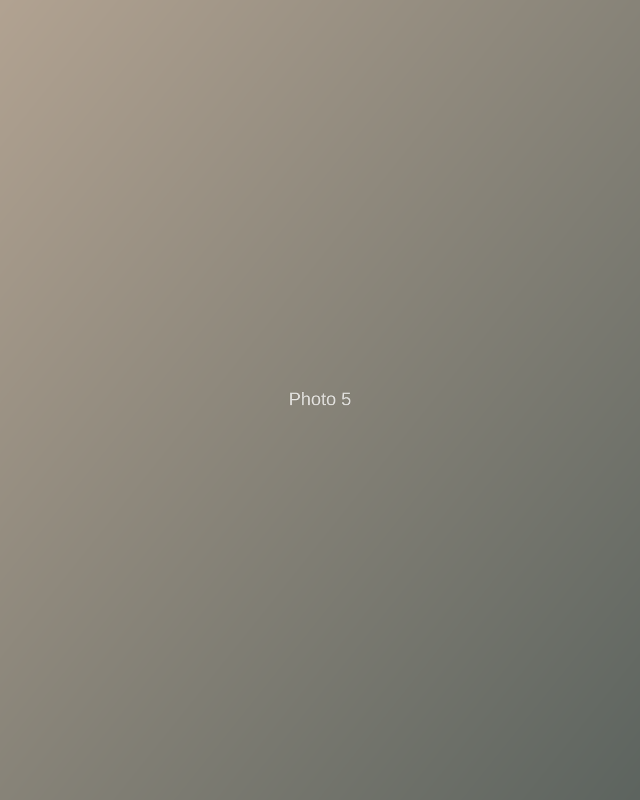
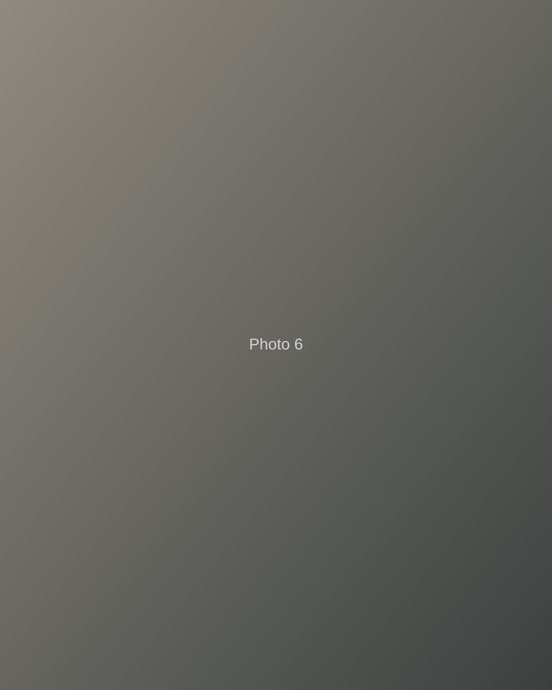

A visual journal
Places are remembered by how they felt.
Photographs of passing light, quiet corners and people inhabiting places. Made mostly on an iPhone.






About
Not chasing perfect photographs.
I am interested in how places feel. Photography is an excuse to slow down and notice moments that are easy to miss.
View more on Unsplash ↗